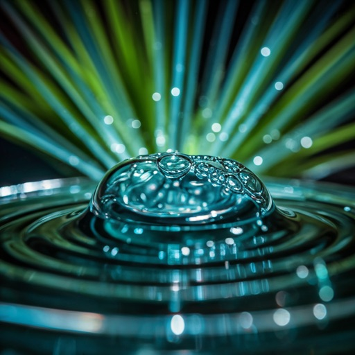

Design with Atmosphere.
Experience the crystal-clear optimism of the 2000s. High-gloss finishes, organic shapes, and vibrant glass aesthetics redefined for the modern web.

98% Clarity
Optimal transparency
Featured Gloss
The core pillars of Aero Design
Organic Textures
Merging technology with the softness of the natural world. Grass, water, and sky meet glass and chrome.
Liquid UI
Interfaces that flow like water, responding to every touch with fluid grace.
Vibrant Palettes
The signature blue and green spectrum of the 2000s era.
Rendering Clarity
Crafted for Modern Screens
We've combined the optimistic soul of 2004 with the performance of 2024.
Frosted Layers
Sophisticated depth created through layered translucency and light refraction effects.
Fluid Motion
Transitions inspired by the physics of water and the organic growth of natural forms.
Auroral Depth
Dynamic backgrounds that utilize shifting light gradients to create a sense of endless space.
Step into the
Future-Nostalgia.
Start building with the GalleryOS design system today and bring back the gloss to your applications.